The Chaos Game creates fractals using the following procedure:
Define a polygon with 3 or more vertices
Select a starting point either inside our outside the vertices
Select a random vertex
Mark a point 'r' percent between the point and vertex
Repeat from step 3
It is surprising that this random procedure produces fractals instead of a random cloud of points.
There are several options to be considered when playing the chaos game:
How many vertices should be used
What percent of the distance should be marked in between the selected point the the vertex
What is the vertex selection procedure
The goal is often to select a value of 'r' that produces shapes that just 'kiss' rather than overlap. The procedure for calculating an optimal value is discussed in depth on wikipedia.
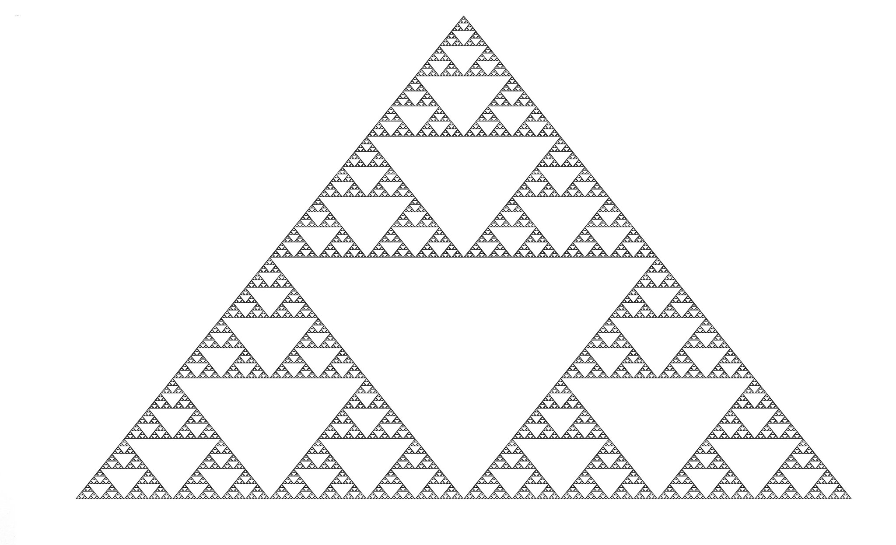
Chaos Game with 3 Vertices
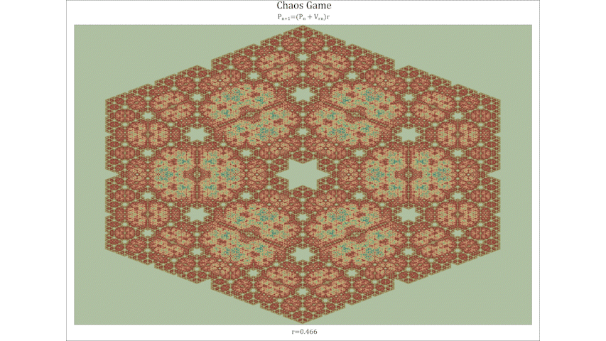
Effect of selecting different midpoints-6 vertices
Chaos Game with Different Vertex Counts
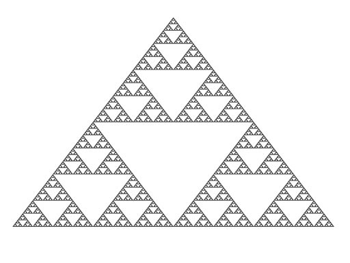
3 Vertices
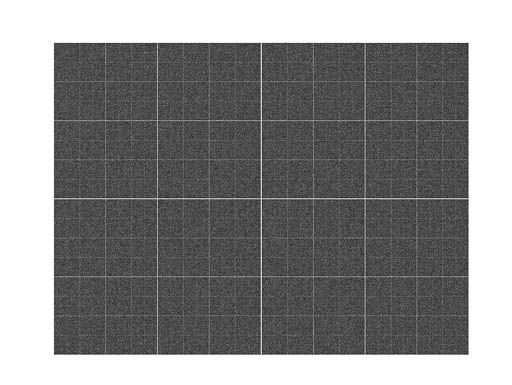
4 Vertices
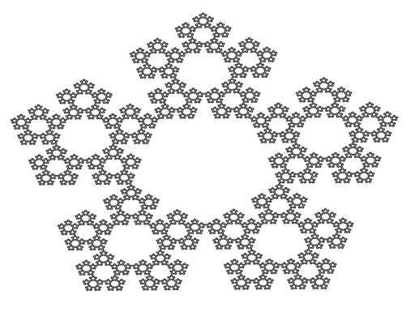
5 Vertices
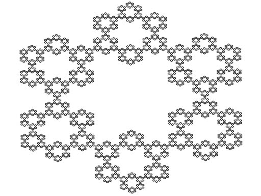
6 Vertices
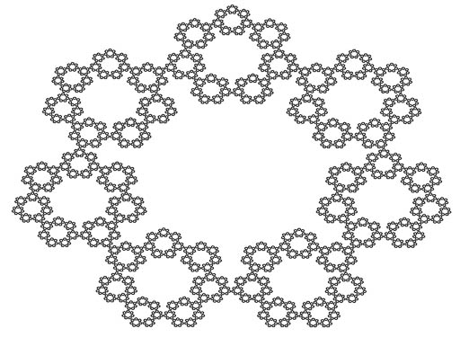
7 Vertices
8 Vertices
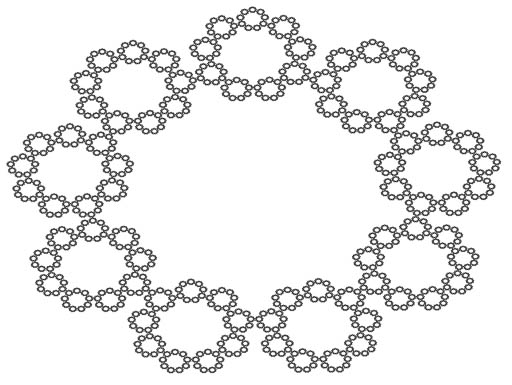
9 Vertices
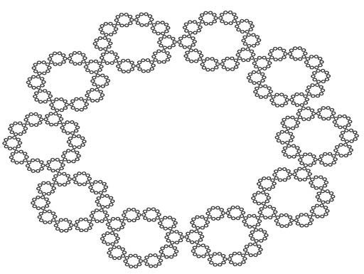
10 Vertices
11 Vertices
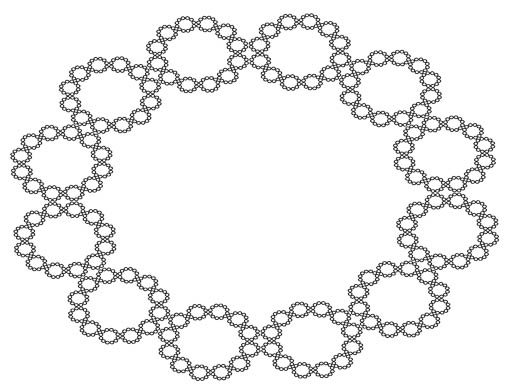
12 Vertices
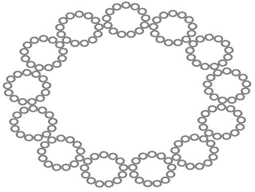
13 Vertices
Examples
Points can be colored according to the number of times they were visited, or by some other technique.